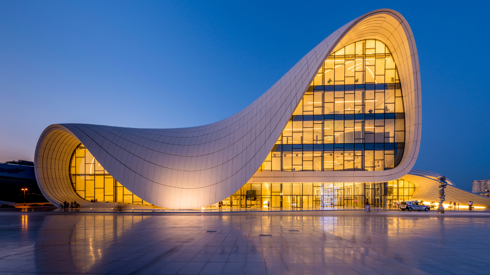

Sobre Arquitetura
A arquitetura é a arte e técnica de projetar e edificar o ambiente habitado pelo ser humano.
Uma definição mais ampla inclui projetar e construir qualquer tipo de sistema, e frequentemente é vista como uma forma de arte,
incluindo a manipulação de volumes, espaços, iluminação e materiais.
Imagens de Arquitetura
A arquitetura moderna, surgida no final do século XIX e início do século XX, é caracterizada por uma ruptura com os estilos históricos e ornamentais do passado, enfatizando a funcionalidade, a simplicidade e o uso de novos materiais e tecnologias. Os arquitetos modernos adotaram linhas limpas, formas geométricas e a ausência de decoração excessiva, refletindo uma estética minimalista. Materiais como aço, vidro e concreto foram amplamente utilizados, permitindo a criação de estruturas inovadoras e espaços abertos. Grandes nomes como Le Corbusier, Ludwig Mies van der Rohe e Frank Lloyd Wright desempenharam papéis cruciais na definição e disseminação dos princípios da arquitetura moderna, que continua a influenciar o design contemporâneo.
Optar por uma arquitetura moderna hoje em dia oferece múltiplas vantagens, incluindo a maximização da eficiência energética e a sustentabilidade. Edifícios modernos são frequentemente projetados com tecnologias avançadas e materiais ecológicos que reduzem o consumo de energia e minimizam o impacto ambiental. Além disso, a flexibilidade e a funcionalidade dos espaços modernos atendem às necessidades contemporâneas de trabalho e vida, promovendo ambientes mais saudáveis e produtivos. A estética limpa e minimalista da arquitetura moderna também oferece um apelo visual atemporal, valorizando o imóvel e proporcionando um estilo de vida sofisticado e adaptável às mudanças futuras.